PORTFOLIO · 2026
AI로 만들고,
직접 알리는
김하진입니다.
비전공자도 AI를 쉽게 시작하도록, 카드뉴스·숏폼·웹까지
직접 기획하고 만들어 홍보해 온 기록입니다.
건국대학교 글로컬캠퍼스 미디어콘텐츠학과 · Instagram @o.xxin.e
카드뉴스숏폼포스터웹사이트앱SNS 운영
→ 키 · 스와이프 · 클릭으로 넘겨 보세요
하진 > AI 기본교육과정 홍보해 줘
✓ 카드뉴스 5장 기획
✓ 숏폼 42초 편집
✓ 신청 페이지 웹 제작
하진 > 마지막 확인은 내가 할게_
01 · 한눈에 보기

필요한 건 직접 만들어 보는
미디어콘텐츠학과 학생
중학생 때 SNS로 좋아하는 제품을 소개하던 일이 브랜드 운영, 뷰티 릴스, 게임 프로젝트로 이어졌습니다. 기획과 디자인 기준은 제가 정하고, 손이 많이 가는 구현은 AI와 함께 빠르게 해냅니다.
0개AI와 함께 만든 웹·앱
0건AI 강좌 홍보물 제작
0명운영 중인 인스타 팔로워
0곳직접 설득한 협찬 브랜드
02 · 서포터즈 활동과 내 경험
서포터즈가 할 일을 이미 해 봤습니다
03 · 교내 서포터즈 · K-MOOC 「AI시대의 첫걸음」
매주 그 주의 AI 강의로
홍보물을 새로 만들었습니다
해드림 서포터즈(팀 겜드림)로 비전공자용 AI 교양 강좌를 7주간 직접 듣고, 그 주 강의 내용으로 홍보물을 만들어 채널마다 형식을 바꿔 올렸습니다.
- 질문“폰 바꿔도 사진이 그대로인 이유?”
비전공자가 공감할 일상 장면
- 강의 핵심그 주 강의의 한 장면을
쉽게 다시 풀기
- 수강 안내K-MOOC 검색 · 마감일
차시당 10~30분
채널: 인스타그램(피드·스토리·릴스) · 에브리타임 · 학과 단톡방 · 동아리 단톡방 · 카카오톡 오픈채팅
팀 활동 · 홍보물 기획·디자인·제작 참여
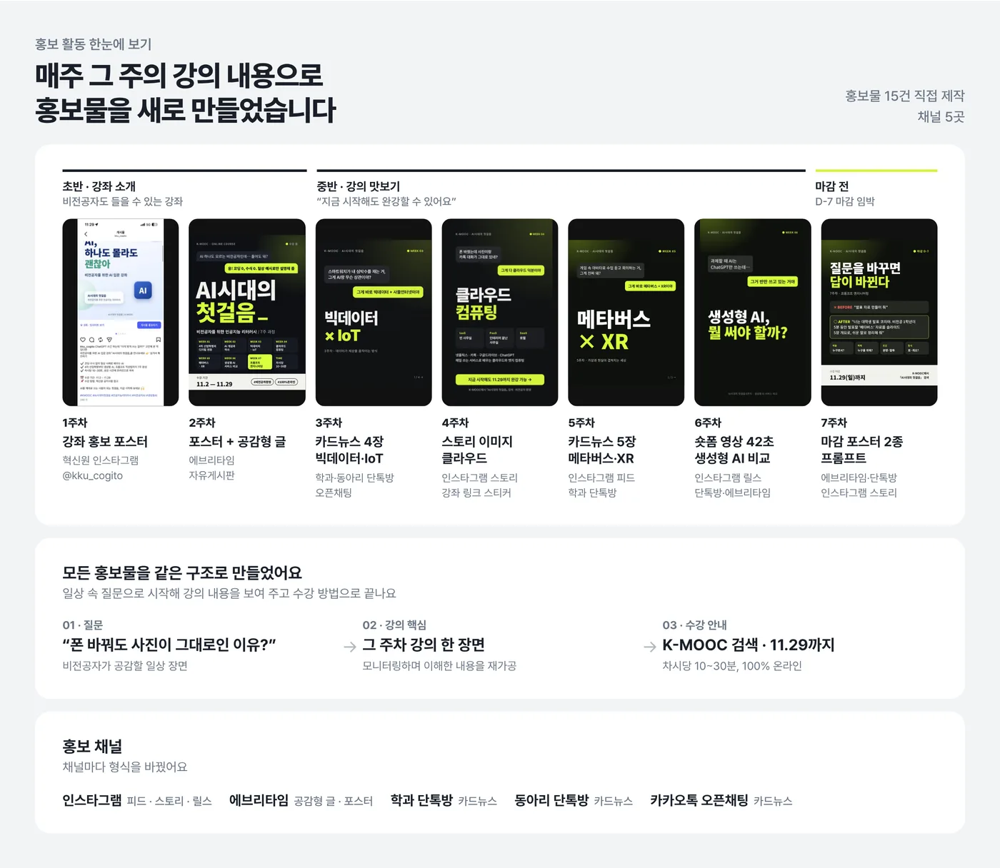
04 · 카드뉴스 · 포스터
어려운 AI 용어를, 한 장에 한 가지씩
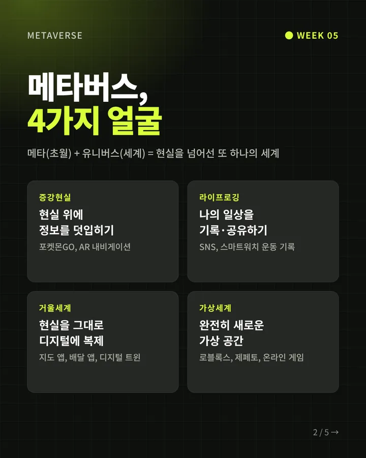
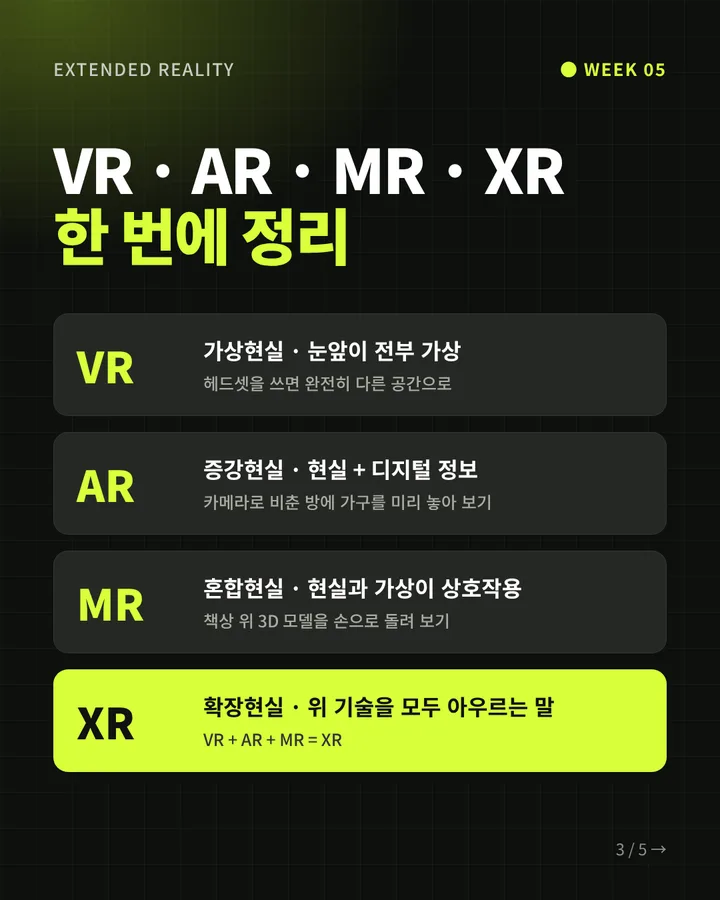


5주차 카드뉴스 5장 · 말풍선 질문으로 시작해 개념 정리 → 생활 속 예시 → 수강 안내로 끝나는 구조 · 1080×1350 피드용
05 · 쇼츠 · 포스터
15초 안에 눌러 보게 만드는
숏폼과 마감 포스터
6주차 강의 「생성형 AI, 뭘 써야 할까?」를 42초 숏폼으로 만들었습니다. 같은 질문을 여러 AI에 넣어 답을 비교하는 장면으로, 보는 사람이 바로 따라 해 볼 수 있게 했습니다.
- 장면 6개 스토리보드 → 자막 강조 → 편집
- 마감 D-7에는 스토리용 9:16 · 피드용 4:5 포스터 2종
- “질문을 바꾸면 답이 바뀐다” 프롬프트 팁으로 마무리
숏폼 42초 · 소리 켜고 재생
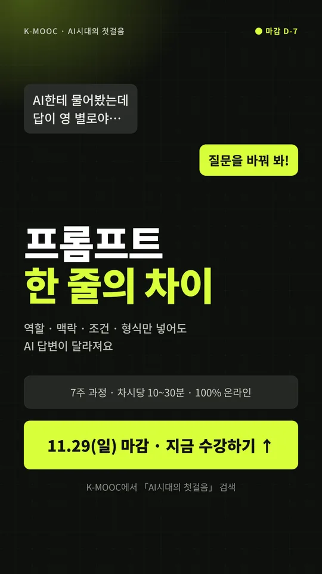

06 · 강좌 모니터링
홍보하기 전에,
강의부터 끝까지 봤습니다
홍보물은 강의를 제대로 알아야 만들 수 있었습니다. 21개 영상을 체크리스트로 점검하고, 운영팀이 바로 고칠 수 있게 시점·캡처·수정 문구로 정리했습니다.
0개점검한 차시 영상
0항목체크리스트 점검
0건화면 오류 발견
이 경험 덕분에 학생이 강좌 앞에서 어디서 망설이는지 압니다. 자막, 과제 게시판, 강의 분량처럼요.
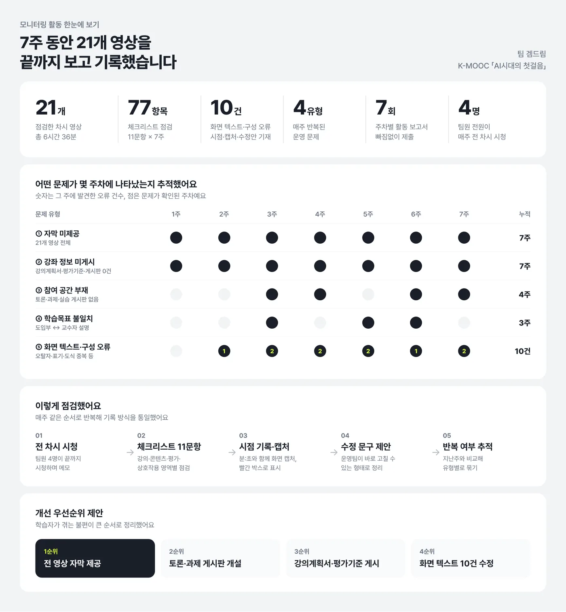
07 · K-MOOC 강좌 홍보 아이디어 공모전
강좌 분석부터 홍보 퍼널까지 한 번에 기획했습니다
「AI시대의 휴먼리터러시」 강좌를 분석해 “AI에게 묻고, 인간이 답한다” 4단계 퍼널을 짜고, 단계마다 카드뉴스·숏폼·학식 QR 같은 접점을 붙였습니다.
 1 · 강좌 한눈에 분석
1 · 강좌 한눈에 분석
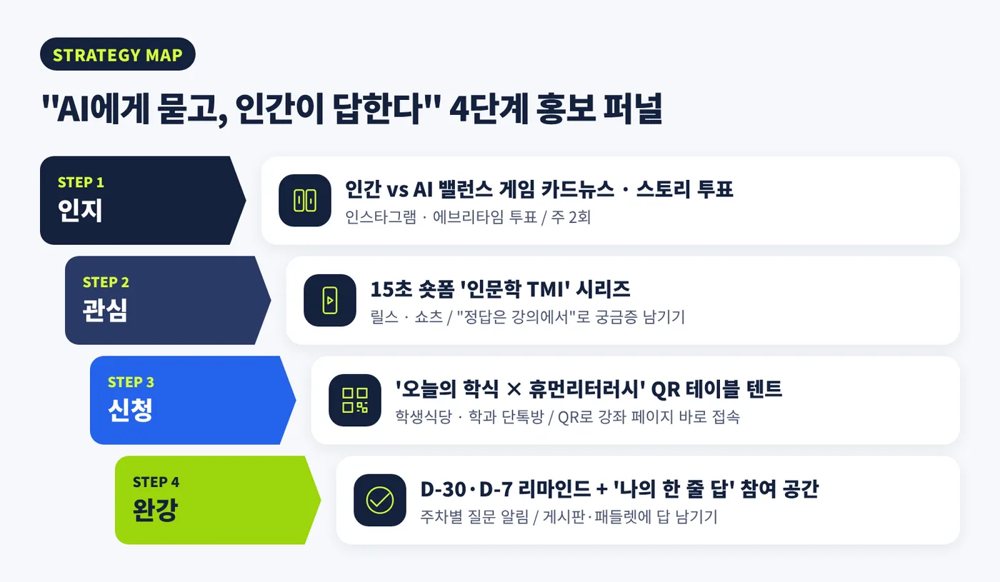
2 · 인지 → 관심 → 신청 → 완강
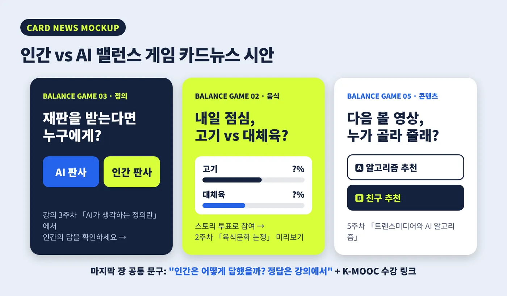
3 · 인간 vs AI 밸런스 게임 카드뉴스
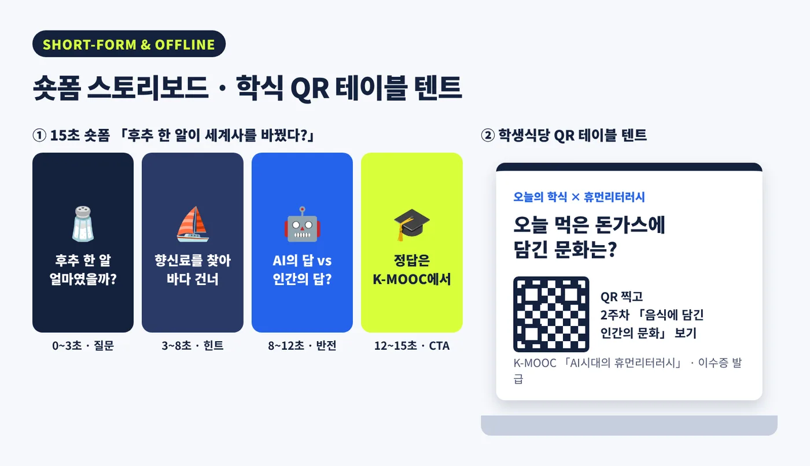
4 · 15초 숏폼 · 학식 QR 테이블 텐트
08 · 웹사이트
홍보에 필요한 웹은
직접 만들어 띄웁니다
화면 디자인과 기준은 제가 정하고, 코드는 Claude와 함께 짰습니다. 전시장에 와이파이가 없던 날엔 사이트를 인터넷 없이 열리는 폴더로 바꿔 바로 띄웠습니다.
eternia-exhibition
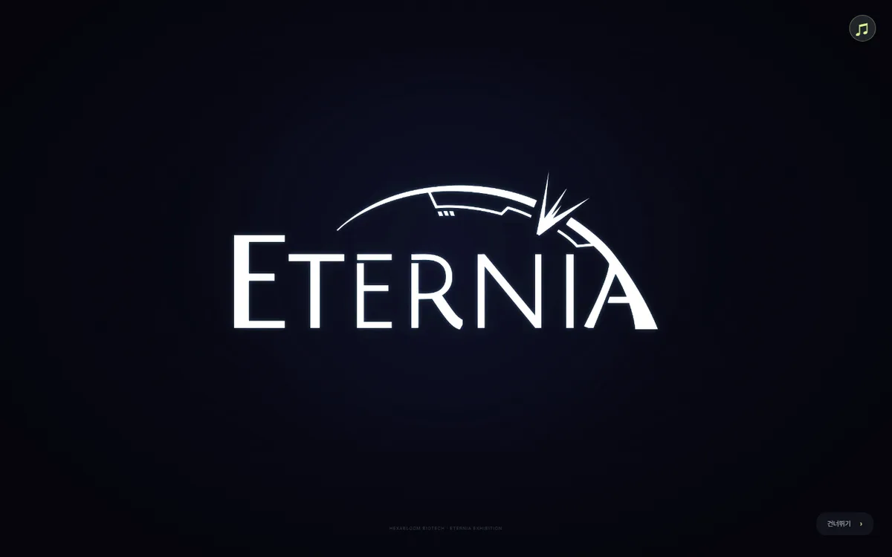
hwanshangchoice

hamchisgames.netlify.app

09 · 앱 (PWA)
불편하면 앱으로 만들어 씁니다
프롬프리에딧촬영용 대본 프롬프터숏폼을 찍을 때 대본을 카메라 위에 띄우고, 씬·테이크별로 관리하는 촬영 앱

 하진 비서일정 · 팀 관리
하진 비서일정 · 팀 관리말하거나 적으면 일정·할 일로 정리하고, 서버 동기화와 푸시 알림으로 팀 일정을 챙기는 앱

 CES 가이드참관 앱 · 제작 중
CES 가이드참관 앱 · 제작 중처음 가는 연수생을 위한 전시장 지도, 부스 기록, 실시간 번역 앱
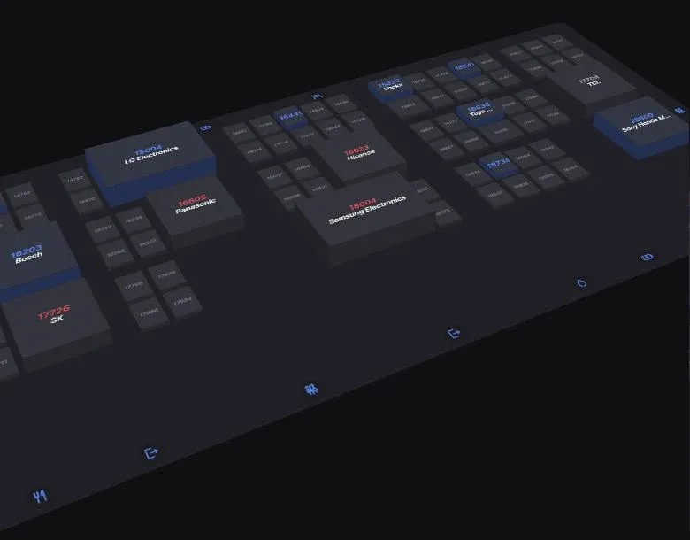
10 · 홍보영상 · 모션그래픽
AI로 소스를 만들고,
박자에 맞춰 직접 편집합니다
THE MARIONETTE · 59초 MV
캐릭터·소품·장소는 제가 디자인하고, 음악은 Suno, 이미지는 ChatGPT, 영상 클립은 Seedance로 만든 뒤 After Effects에서 박자에 맞춰 편집했습니다.
유튜브에서 보기 ↗
ETERNIA 플레이 영상 · PV
게임 플레이를 녹화해 전시 홍보용 영상으로 편집했습니다. 오른쪽은 실제 플레이 장면입니다.
11 · SNS 관리
직접 찍고, 편집하고,
반응을 보며 운영합니다
0명@o.xxin.e 팔로워
0만최근 30일 조회
0건브랜드 SNS 운영 · 월 구매
- 중학생페이스북으로 제품 소개 · 팔로워 6.9천
- 2018쇼핑몰 운영 · 고등창업 콘테스트 금상
- 21살무신사 입점 새 브랜드 yusei 전개 · SNS 운영
- 지금협찬 게시물 · 뷰티 릴스 직접 촬영·편집
인스타그램 수치 2026.11.21 인사이트 기준 · 월 구매 582건은 에이블리 6월 기준

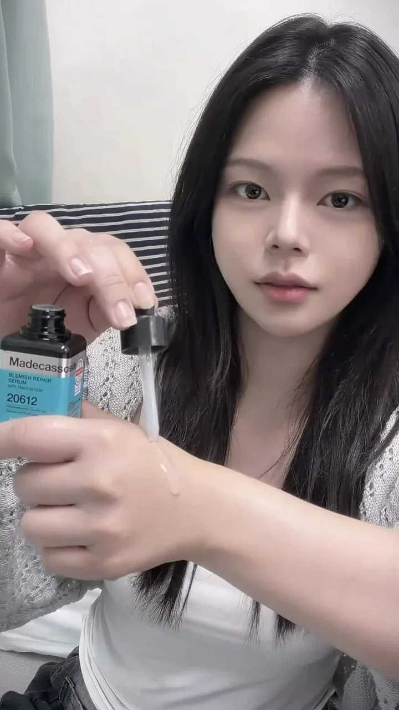

12 · 팀 프로젝트 · ETERNIA
기획부터 전시 운영까지,
사람들 앞에 세워 봤습니다
뷰티를 게임으로 풀어낸 졸업작품 ETERNIA에서 PM을 맡았습니다. 브랜드 2곳을 직접 찾아가 협찬을 받고, 5일 동안 전시 부스를 운영하며 현장에 필요한 웹과 촬영 키오스크를 바로 만들어 붙였습니다.
제가 맡은 부분
PM · 기획 · UX/UI · 브랜드 섭외 · 전시 운영물 6종 · 웹 초대장·가상 전시·키오스크 제작
팀 햄치스 딜리버리 3명 (김하진 · 최민서 · 안서연)
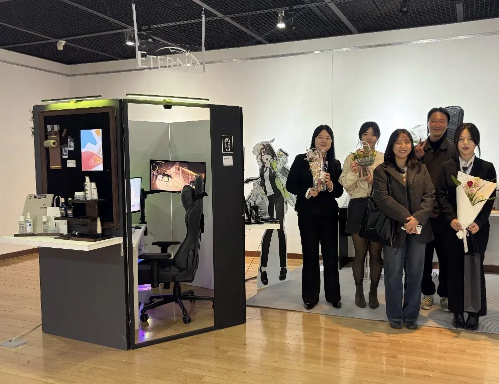
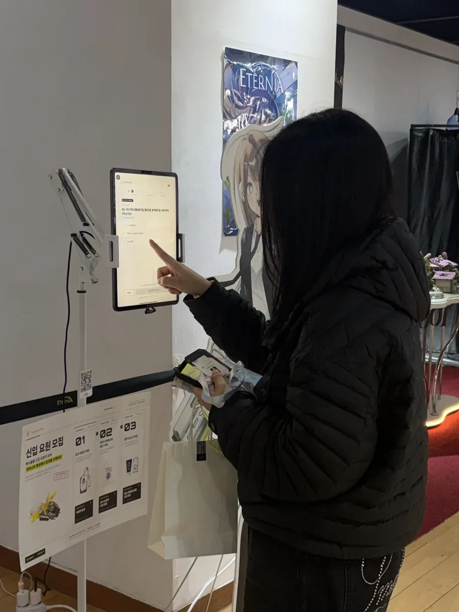
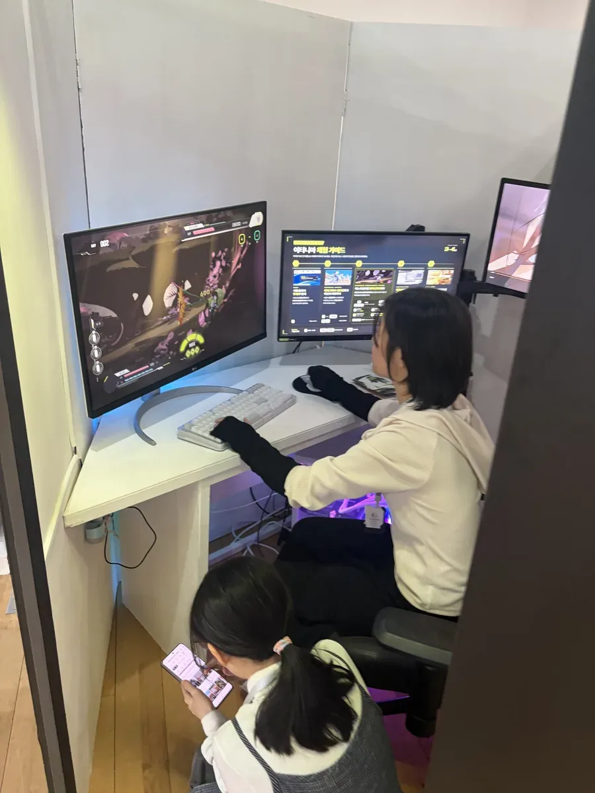
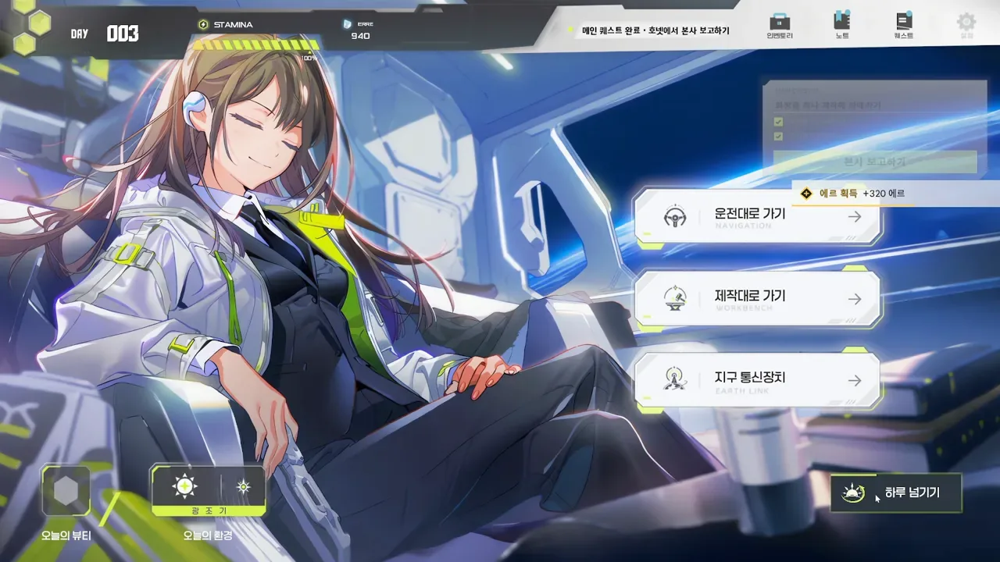
13 · AI를 쓰는 기준
고르고 고치는 건 제가,
손이 많이 가는 건 AI가
1누가 볼 건지부터내부용 자료를 외부 손님용으로 다시 그리게 했습니다.
2보이는 건 한 번에 짚기위계·여백·화질처럼 눈에 걸리는 건 바로 고칩니다.
3현장에서 쓰는 방식대로전시장에 두는 키오스크는 눌러야만 찍히게 만들었습니다.
4마지막 손질은 직접AI 결과물은 초안. 최종 위치·문구는 제가 정합니다.
AI에게 맡긴 일웹·앱 코드, 파일 변환, 이미지·음악·영상 소스, 반복 작업
제가 하는 일기획, 디자인 기준, 홍보 문구, 편집, 최종 확인과 수정
14 · 서포터즈가 된다면
「전공별 AI 첫 과제」
학과별로 “이번 주 과제를 AI로 이렇게 해 봤다”를
15초 숏폼으로 찍고, 웹페이지에서 학과를 고르면 바로 따라 해 보게.
숏폼15초 과정 영상디자인·경영·간호 등 학과별 실제 과제
→
웹페이지학과 고르면 예시프롬프트와 결과를 그대로 복사
→
신청교육과정 바로가기마지막 화면은 신청 링크로
보는 데서 끝나지 않고, 첫 수강까지 이어지게 만들겠습니다.
김하진 · Instagram @o.xxin.e